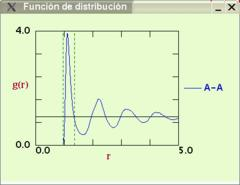

EXPERIMENT
1: Attraction forces and condensed phases
- Initial conditions
- Select in Main Panel a high temperature ( T >0.60) and moderate density (0.30)
- Choose from the menu Simulation Type the option Pure Substance
- Visualize the shape of the interaction using the option Interactions available withing the menu System Control
- Using the slider rule, choose the cutoff distance at 2.5
- You can see that the interaction exhibits an energy minimum at

- Simulations in the gas phase
- Start the simulation with the conditions specified above using the option Start (press the Right Mouse button to access the Control Popup Menu)
- Observe the phase diagram of the system (Rc=2.5)
- Activate in the menu System Control the option Pair distribution function

- Effects of the attractive potential:
- Particles tend to form agregates
- The distribution function g(r), presents a maximum at a distance around the interaction potential minimum
- Condensation: Liquid-vapor Equilibrium
- Lower the temperature (with constant density) until
entering the "L+V" zone in the phase diagram (T~ 0.40)
- Observe the build up of two well defined phases: a high particle
density phase (liquid) and a low density phase (vapor)

- Lower the temperature (with constant density) until
entering the "L+V" zone in the phase diagram (T~ 0.40)
- Solid-vapor equilibrium
-
Lower the temperature until entering the "S+V" zone (for instance T
~ 0.30). Observe the following features:
- The high density phase becomes compact and ordered (as a crystal)
- The number of particles (and density) of the vapor phase diminishes
- Take a look at characteristic structure of the g(r)
function for crystalline solids
NOTICE: It might be useful to momentarily stop the simulation (Pause option in the Control Popup Menu) and then activate the option Paint bonds from the menu System Control, in order to better appreciate the particle ordering.
- Effects of the attraction between particles
- Press the Pause option from the Control Popup Menu if the Simulation is running and modify the interaction potential (Option Interactions from the System Control menu) untill the attractive well disappears (cutoff: Rc =1.12)
- Press the option Go on from the Control Popup Menu
- Observe the the formation of an homogeneous gas phase
- Pause the simulation again
- Restore the original interaction cutoff (Rc=2.50)
- Press Go on and observe the return of the two phases (liquid and vapor) in equilibrium
- The high density phase becomes compact and ordered (as a crystal)